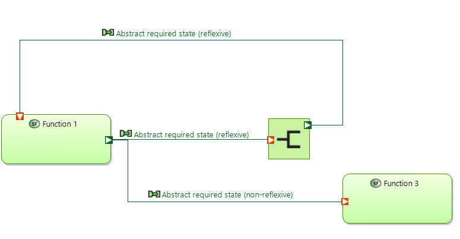

Modeling rules for system analysis
Overall
SA-001
In order to ensure consistency within the project, British English is to be used at all times.
Refer to the Cambridge Dictionary for further information.
SA-002
Images and/or diagrams that are to be used in the descriptions of Capella model elements shall be created and maintained.
SA-003
Description Links for model elements shall be used in all model element descriptions.
E.g. if a certain description refers to a defined model element, the name of the model element being referred to shall be copied (as a Description Link) and pasted (as a Link) in the corresponding description field.
Exception: model elements defined as abstract concepts or terms, which serve solely as a form of documenting information external to the project, shall be excluded from this rule.
Elements
System capability
SC-106 - Naming convention
Sentence case - the first letter of the first word in a sentence is capitalised.
The name of a system capability should begin with an active verb.
The verb should be specific enough to identify what the actor wants from the system. Verbs such as "manage", "handle" or "process" are not specific enough and are forbidden.
The usage of abbreviations should be well considered and should only be used in cases where the abbreviation is standardised.
In addition, the system capability name gets a prefix:
<Capability unique number>.<Number in case of generalisation link>: <System capability's name>
Each capability has a number to be identified. This unique number is defined by creation of the capability (began by 01); If some capabilities have a generalisation link, we can add a specific number to report this.
Info
capabilities can be grouped by a mission in the model if needed
Examples:
- 01: Set point for train unit movement
- 02: Authorise train unit movement
- 03.1: Prepare departure of passenger train unit
- 03.2: Prepare departure of fright train unit
System functional exchange
SFE-150
For all exchanges between core system functions (functions that use the control pattern), the following exchange types are permitted; no other exchanges are permitted.
-
Abstract required state (non-reflexive)(WHERE an abstract required state is used as a parameter to another function)
- Produced by function type: Control OR External input to system
- Consumed by function type: Control (different type) or Indicate.
Example (classical route signalling):
Source Exchange Sink control set/unset state of route required state of point control left/right position of point control set/unset state of route required state of point indicate required state of point -
Abstract required state (reflexive) (WHERE one type of abstract state is used as a parameter to another instance of the same function that produced the original abstract state type)
- Produced by function type: Control state x (instance y)
- Consumed by function type: Control state x (instance z)
- For functional exchanges between two instances of the same function, the functional exchange should go through a duplicate function (Name of the duplicate function shall be Duplicated instance of function 'original function name').

Example (classical light signalling):
Source Exchange Sink control aspect of light signal BER003 (Hauptsignal/Main signal) required aspect of signal BER001 control aspect of light signal BER001 (Vorsignal/Distant signal) -
Plant external required input state
- Produced by function type: Control
- Consumed by function type: Actuate or Indicate
- Plant external actual input state
- Produced by function type: Actuate
- Consumed by function type: Plant
- Plant actual output state
- Produced by function type: Plant
- Consumed by function type: Sense
- Sensed output state
- Produced by function type: Sense
- Consumed by function type: Observe
- Estimated internal state (abstraction level equal to abstraction used by control)
- Produced by function type: Observe
- Consumed by function type: Control
- Estimated internal state (abstraction level less than abstraction used by control OR used by observe function for a different internal state)
- Produced by function type: Observe
- Consumed by function type: Observe (different instance)
- Estimated internal state (for indication to a human user)
- Produced by function type: Observe
- Consumed by function type: Indicate
- Human perceptable state
- Produced by function type: Indicate
- Consumed by function type: Control or Observe (allocated to human actor)
Viewponts
General rules
GRV-010 - Diagram naming convention
Each diagram shall be named according to following convention:
[<Capella diagram type abbreviation>][<Viewpoint number>] <Subject of view> [<Viewpoint name>]
Capella diagram type abbreviation: abbreviation indicating the type of the diagram with the following possible values:
- MCB - Mission Capabilities Blank
- CC - Contextual Capability
- SDFB - System Data Flow Blank
- SFBD - System Function Breakdown
- SAB - System Architecture Blank
- CSA - Contextual System Actors
- S.ES - System Exchange Scenario (Default in Capella [ES])
- SDFB - System Functional Chain Description
- S.CDI - Contextual Component Detailed Interfaces (Default in Capella [CDI])
- S.STM - System State Machine (Default in Capella [MSM])
Viewpoint number: number given to the viewpoint based on ARCH viewpoint number
Subject of view: either a <model element> or <free text>
<model element>- exact name of the model element
- is used if the viewpoint focuses on a single model element
<free text>- a useful title providing initial information about the contents of the diagram (e.g. set of model elements shown)
- is used if the viewpoint does not focus on a single model element or for other cases
- shall be written in sentence case - the first letter of the first word in a sentence is capitalised
Guidance:
if needed also further information like e.g. sequence diagram main success scenario, alternative scenario, etc. can be included
Viewpoint name: name given to the viewpoint based on ARCH viewpoint name
Examples: [SDFB][AMOD-056] SysC15: Respond autonomously to obstacle on or near the line [System functions and exchanges (single system capability)]
GRV-020
Optional rule: A diagram has a visible note as a short text description consisting of the following three parts:
- Status: initial draft, group reviewed, design reviewed
- Version: version of the diagram, there is only a version after first design review
- Reference: references to resources on which the diagram was created/build
GRV-030
If a note is used on a diagram, it should include the name of the person responsible and the date of creation.
Note: if after the design review there is still a need for the note, the name can be removed.
System Architecture (SAB)
AMOD-119 System context definition
119-010
All actors on the diagram are connected with the system via a component exchange.
119-020
The flow direction of each component ports is set as follows:
- in: In case all functional exchanges flowing into a system function that is allocated to the system or actor, to which the component port belongs. This must correspond to component port of the inverted flow direction at the other end of the same component exchanges.
- out: In case all functional exchanges flowing out of a system function that is allocated to the system or actor, to which the component port belongs. This must correspond to component port of the inverted flow direction at the other end of the same component exchanges.
- inout: In case at least one functional exchange is flowing out of a system function and at least one functional exchange is flowing into the same system function and that system function is is allocated to the system or actor, to which the component port belongs. This must correspond to component port of the same flow flow direction at the other end of the same component exchanges.